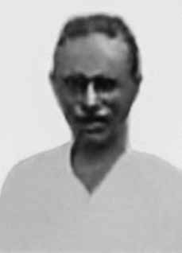

João
Pedro
Teixeira
CIRCUNSTÂNCIAS DA MORTE
No dia 2 de abril de 1962, ao retornar de uma viagem a João Pessoa (PB), João Pedro Teixeira foi morto a tiros por pistoleiros contratados por latifundiários da região.
Naquela época, quando já era um grande líder local, João Pedro enfrentava um conflito a respeito dos processos legais em torno do sítio Antas do Sono, que ele arrendara de seu sogro e que havia sido vendido para Antônio José Tavares. Segundo o depoimento de Francisco de Assis Lemos de Souza, a ida de João Pedro para a capital, naquele 2 de abril, teria como objetivo uma reunião com Antônio, comprador do sítio, e seu advogado. A reunião não ocorreu e João retornou para casa ao final da tarde.
Ao descer do ônibus, nas proximidades de Café do Vento em direção a Sapé, João Pedro pretendia percorrer o resto do caminho a pé. Durante a caminhada, entretanto, foi atingido por cinco balas de fuzil. Após apuração de inquérito, constatou-se que o crime fora executado pelo cabo Antônio Alexandre da Silva, pelo soldado Francisco Pedro de Silva (“Chiquinho”) e pelo vaqueiro Arnaud Nunes Bezerra, que atuavam como pistoleiros.
Segundo consta nos depoimentos e materiais jornalísticos anexados ao processo da CEMDP, os mandantes do crime foram Aguinaldo Veloso Borges, Pedro Ramos Coutinho e o próprio Antônio José Tavares. O crime teve evidente motivação política, com o objetivo de desmobilizar as lideranças camponesas da região. A imprensa da época repercutiu amplamente o caso, causando grande indignação na população e em lideranças locais.
A cerimônia de sepultamento de João Pedro Teixeira tomou as ruas de Sapé, com a participação de cerca de 5 mil camponeses da região. Um ato organizado pelos trabalhadores para o 1º de maio, semanas após a sua morte, reuniu cerca de 40 mil pessoas na capital do Estado. Essas movimentações mobilizaram a opinião pública, que cobrava uma punição mais rigorosa sobre o caso. Pressões para a instauração de uma Comissão Parlamentar de Inquérito que elucidasse o caso de forma mais efetiva foram articuladas na Assembleia Legislativa do Estado.
Após a instauração da Comissão foram identificados e notificados os mandantes do crime, todos condenados, com exceção de Aguinaldo Veloso Borges, então sexto suplente de deputado estadual, que assumira o cargo às pressas para garantir imunidade parlamentar. Apesar da condenação, todos os culpados pela morte de João Pedro foram absolvidos, em março de 1965, pelo regime militar. O caso de João Pedro, apesar de indeferido por unanimidade pela CEMDP foi, na ocasião, relatado com pesar por Nilmário Miranda.
Segundo ele, não havia dúvidas de que o caráter político das Ligas Camponesas e as constantes perseguições sofridas por seus líderes deveriam ser respaldadas pela Lei n° 9.140/1995. O indeferimento estava relacionado à dificuldade de comprovar a responsabilidade direta do Estado na morte do líder camponês. Em 15 de julho de 2013, a Comissão Nacional da Verdade e a Comissão Estadual da Verdade da Paraíba, realizaram uma audiência pública no município de Sapé (PB), para ouvir depoimentos e colher informações a respeito das perseguições às Ligas Camponesas.
Foram ouvidos cinco testemunhos de participantes nas atividades políticas locais. Durante a audiência, Elizabeth Teixeira, viúva de João Pedro e ex-presidente da Liga Camponesa de Sapé, reafirmou o protagonismo de João Pedro na constante busca pelos direitos dos trabalhadores do campo, relatou as arbitrárias perseguições que decorreram de sua morte, além das que persistiram no pós-golpe militar. A audiência reafirmou a importância e o legado das Ligas Camponesas na região e a necessidade de se elucidar os casos de violações de direitos humanos envolvendo trabalhadores rurais e seus líderes.
À exemplo de outros casos de violências e mortes na região, que continuam sem solução, como dos trabalhadores João Alfredo Dias (conhecido como Nego Fuba) e Pedro Inácio de Araújo (conhecido como Pedro Fazendeiro), também militantes da Liga Camponesa de Sapé, desaparecidos em setembro de 1964.
On April 2, 1962, upon returning from a trip to João Pessoa (PB), João Pedro Teixeira was shot dead by gunmen hired by landowners in the region.
At that time, when he was already a great local leader, João Pedro was facing a conflict regarding the legal processes surrounding the Antas do Sono farm, which he had leased from his father-in-law and which had been sold to Antônio José Tavares. According to the testimony of Francisco de Assis Lemos de Souza, João Pedro's trip to the capital, on that 2nd of April, was intended to meet with Antônio, the buyer of the site, and his lawyer. The meeting did not take place and João returned home in the late afternoon.
When getting off the bus, near Café do Vento towards Sapé, João Pedro intended to walk the rest of the way. During the walk, however, he was hit by five rifle bullets. After an investigation, it was found that the crime was carried out by corporal Antônio Alexandre da Silva, soldier Francisco Pedro de Silva (“Chiquinho”) and cowboy Arnaud Nunes Bezerra, who acted as gunmen.
According to the testimonies and journalistic materials attached to the CEMDP process, the masterminds of the crime were Aguinaldo Veloso Borges, Pedro Ramos Coutinho and Antônio José Tavares himself. The crime was clearly politically motivated, with the aim of demobilizing the region's peasant leaders. The press at the time covered the case widely, causing great outrage among the population and local leaders.
João Pedro Teixeira's burial ceremony took place on the streets of Sapé, with the participation of around 5 thousand peasants from the region. An event organized by workers for May 1st, weeks after his death, brought together around 40 thousand people in the state capital. These movements mobilized public opinion, which demanded stricter punishment in the case. Pressures for the establishment of a Parliamentary Commission of Inquiry that would elucidate the case more effectively were articulated in the State Legislative Assembly.
After the Commission was established, the perpetrators of the crime were identified and notified, all of whom were convicted, with the exception of Aguinaldo Veloso Borges, then sixth deputy state deputy, who had taken office in a hurry to guarantee parliamentary immunity. Despite the conviction, all those responsible for João Pedro's death were acquitted, in March 1965, by the military regime. João Pedro's case, despite being unanimously rejected by CEMDP, was, at the time, reported with regret by Nilmário Miranda.
According to him, there was no doubt that the political nature of the Peasant Leagues and the constant persecution suffered by their leaders should be supported by Law No. 9,140/1995. The rejection was related to the difficulty of proving the State's direct responsibility for the death of the peasant leader. On July 15, 2013, the National Truth Commission and the State Truth Commission of Paraíba held a public hearing in the municipality of Sapé (PB), to hear testimonies and gather information regarding the persecution of the Peasant Leagues.
Five testimonies were heard from participants in local political activities. During the hearing, Elizabeth Teixeira, João Pedro's widow and former president of the Sapé Peasant League, reaffirmed João Pedro's leading role in the constant search for the rights of rural workers, reported the arbitrary persecutions that resulted from his death, in addition to those that persisted after the military coup. The hearing reaffirmed the importance and legacy of the Peasant Leagues in the region and the need to clarify cases of human rights violations involving rural workers and their leaders.
Like other cases of violence and deaths in the region, which remain unsolved, such as workers João Alfredo Dias (known as Nego Fuba) and Pedro Inácio de Araújo (known as Pedro Fazendeiro), also militants of the Sapé Peasant League, who disappeared in September 1964.
El 2 de abril de 1962, al regresar de un viaje a João Pessoa (PB), João Pedro Teixeira fue asesinado a tiros por pistoleros contratados por terratenientes de la región.
En ese momento, cuando ya era un gran líder local, João Pedro enfrentaba un conflicto en torno a los procesos judiciales relacionados con la finca Antas do Sono, que había arrendado a su suegro y que había sido vendida a Antônio José Tavares. Según el testimonio de Francisco de Assis Lemos de Souza, el viaje de João Pedro a la capital, aquel 2 de abril, tenía como objetivo reunirse con Antônio, el comprador del terreno, y su abogado. La reunión no tuvo lugar y João regresó a casa a última hora de la tarde.
Al bajar del autobús, cerca del Café do Vento en dirección a Sapé, João Pedro tenía la intención de caminar el resto del camino. Sin embargo, durante el paseo recibió cinco impactos de bala. Luego de una investigación, se constató que el crimen fue perpetrado por el cabo Antônio Alexandre da Silva, el soldado Francisco Pedro de Silva (“Chiquinho”) y el vaquero Arnaud Nunes Bezerra, quienes actuaron como pistoleros.
Según los testimonios y materiales periodísticos adjuntos al proceso del CEMDP, los autores intelectuales del crimen fueron Aguinaldo Veloso Borges, Pedro Ramos Coutinho y el propio Antônio José Tavares. El crimen tuvo claramente motivaciones políticas, con el objetivo de desmovilizar a los líderes campesinos de la región. La prensa de la época cubrió ampliamente el caso, provocando gran indignación entre la población y los dirigentes locales.
La ceremonia de entierro de João Pedro Teixeira tuvo lugar en las calles de Sapé, con la participación de alrededor de 5 mil campesinos de la región. Un evento organizado por los trabajadores para el 1 de mayo, semanas después de su muerte, reunió alrededor de 40 mil personas en la capital del estado. Estos movimientos movilizaron a la opinión pública, que exigió un castigo más severo en el caso. En la Asamblea Legislativa del Estado se expresaron presiones para el establecimiento de una Comisión Parlamentaria de Investigación que dilucidaría el caso de manera más efectiva.
Una vez constituida la Comisión, se identificó y notificó a los autores del crimen, todos los cuales fueron condenados, con excepción de Aguinaldo Veloso Borges, entonces sexto diputado estatal adjunto, quien había asumido apresuradamente su cargo para garantizar la inmunidad parlamentaria. A pesar de la condena, todos los responsables de la muerte de João Pedro fueron absueltos, en marzo de 1965, por el régimen militar. El caso de João Pedro, a pesar de haber sido rechazado unánimemente por el CEMDP, fue denunciado con pesar por Nilmário Miranda en su momento.
Según él, no había duda de que el carácter político de las Ligas Campesinas y la constante persecución que sufren sus dirigentes debían ser respaldados por la Ley nº 9.140/1995. El rechazo estuvo relacionado con la dificultad de acreditar la responsabilidad directa del Estado por la muerte del líder campesino. El 15 de julio de 2013, la Comisión Nacional de la Verdad y la Comisión Estatal de la Verdad de Paraíba realizaron una audiencia pública en el municipio de Sapé (PB), para escuchar testimonios y recopilar información sobre la persecución a las Ligas Campesinas.
Se escucharon cinco testimonios de participantes en actividades políticas locales. Durante la audiencia, Elizabeth Teixeira, viuda de João Pedro y ex presidenta de la Liga Campesina de Sapé, reafirmó el papel protagónico de João Pedro en la búsqueda constante de los derechos de los trabajadores rurales, denunció las persecuciones arbitrarias que resultaron de su muerte, además de las que persistieron después del golpe militar. La audiencia reafirmó la importancia y el legado de las Ligas Campesinas en la región y la necesidad de esclarecer los casos de violaciones de derechos humanos que involucran a trabajadores rurales y sus líderes.
Como otros casos de violencia y muertes en la región, que siguen sin resolverse, como los de los trabajadores João Alfredo Dias (conocido como Nego Fuba) y Pedro Inácio de Araújo (conocido como Pedro Fazendeiro), también militantes de la Liga Campesina de Sapé, desaparecidos en septiembre de 1964.